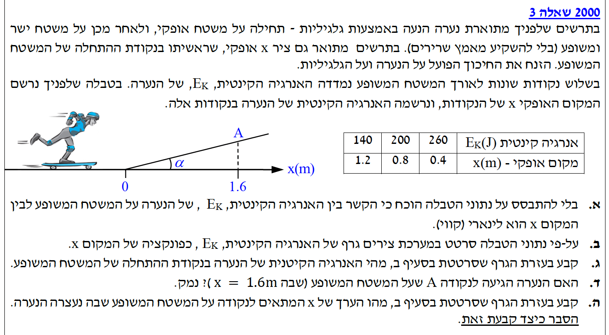

בשאלה זו אנו מתמודדים עם תנועת גוף על משטח משופע תוך ניתוח שיקולי עבודה ואנרגיה המבוססים על קריאת נתונים מטבלה ותרגומם לגרף פיזור.

גוף (נערה וגלגליות) נע על משטח אופקי ולאחר מכן עולה על משטח משופע חלק. זווית השיפוע היא \(\alpha\). ראשית ציר ה-\(x\) האופקי נקבעה בדיוק בנקודת תחילת המשטח המשופע. לא פועלים כוחות חיכוך במערכת (ניתן להזניח חיכוך על הנערה ועל הגלגליות). הנתונים מוצגים ביחידות בינלאומיות תקניות (MKS) ולכן בשלב זה אין צורך לבצע המרת יחידות.
עלינו לספק הוכחה תאורטית (ללא שימוש בנתוני הטבלה המספריים) לכך שהפונקציה המתארת את האנרגיה הקינטית של הנערה \(E_k\) כתלות במיקום האופקי שלה \(x\) היא פונקציה קווית (ליניארית) המקיימת את הצורה המתמטית הידועה \(y = mx + b\).
כאשר הגוף (הנערה) נע על המשטח, פועלים עליו שני כוחות בלבד: כוח הכובד (שהוא כוח משמר) והכוח הנורמלי (שהוא כוח לא משמר). מכיוון שהכוח הנורמלי פועל תמיד במאונך לכיוון התנועה, הוא אינו מבצע כל עבודה (\(W_N = 0\)). מכאן, שהכוח היחיד שמבצע עבודה במערכת הוא כוח הכובד. בהיעדר עבודת כוחות לא משמרים (כיוון שאין חיכוך), מתקיים עקרון פיזיקלי מרכזי - חוק שימור האנרגיה המכנית:
\( E_{k} + U_{G} = E_{tot} = \text{const} \)הנוסחה לאנרגיה פוטנציאלית כובדית מתוך דף הנוסחאות היא:
\( U_{G} = mgh \)נבחר את רמת הייחוס לאנרגיה הפוטנציאלית הכובדית להיות בנקודת תחילת השיפוע. כלומר, בנקודה שבה המיקום האופקי הוא \(x=0\), גם הגובה מעל רמת הייחוס הוא \(h=0\).
נסמן את האנרגיה הקינטית של הנערה בדיוק בתחילת השיפוע כ-\(E_{k0}\). לכן, האנרגיה המכנית הכוללת של המערכת בהתחלה היא פשוט \(E_{tot} = E_{k0} + 0 = E_{k0}\).
מכיוון שהאנרגיה הכוללת נשמרת, בכל נקודה על המשטח המשופע סכום האנרגיה הקינטית והפוטנציאלית חייב להיות שווה לאנרגיה ההתחלתית:
נבודד מהמשוואה את האנרגיה הקינטית \(E_k\):
כעת נשתמש בקשר מתמטי (מתוך הנספח המתמטי). מתוך התבוננות בגיאומטריית המשטח המשופע, ניתן להבחין במשולש ישר זווית שבו הניצב מול הזווית \(\alpha\) הוא הגובה \(h\), והניצב שליד הזווית הוא המיקום האופקי \(x\). הקשר הטריגונומטרי הוא:
נציב קשר מתמטי זה לתוך משוואת האנרגיה הפיזיקלית שקיבלנו:
נסדר את המשוואה כדי לראות בבירור את הקשר בין המשתנים. נקבל:
מסקנה: התקבלה משוואה התואמת בדיוק למבנה הכללי של פונקציית קו ישר \(y = mx + b\), כאשר המשתנה התלוי שלנו הוא \(E_{k}\), המשתנה הבלתי תלוי הוא המיקום \(x\), שיפוע הגרף (שהוא שלילי וקבוע) הוא \(-mg\tan(\alpha)\), ונקודת החיתוך עם הציר האנכי היא הקבוע \(E_{k0}\). הוכחנו בהצלחה שהקשר הוא ליניארי.
טבלת נתונים עם שלוש מדידות המקשרות בין המיקום האופקי \(x\) של הנערה (נמדד במטרים) לבין האנרגיה הקינטית שלה \(E_k\) (נמדדת בג'ולים). הנקודות הן: \((0.4, 260)\), \((0.8, 200)\), ו- \((1.2, 140)\). היחידות הן יחידות MKS תקניות ולכן אין צורך בהמרת יחידות נוספת.
סרטוט גרף במערכת צירים המציג את האנרגיה הקינטית \(E_k\) כפונקציה של המיקום האופקי \(x\) (משתנה תלוי בציר האנכי, משתנה בלתי תלוי בציר האופקי) על סמך נתוני הטבלה.
אין שימוש בנוסחאות פיזיקליות בסעיף זה. הפתרון נשען על מיומנות מעבדתית נדרשת של עיבוד נתונים והצגתם הגרפית (בניית גרף פיזור והעברת קו מגמה מתוך נתונים ניסיוניים).
1. קביעת צירים: נציב את המשתנה הבלתי-תלוי (המיקום \(x\)) על הציר האופקי, ואת המשתנה התלוי (האנרגיה הקינטית \(E_k\)) על הציר האנכי.
2. קנה מידה: נחלק כל ציר לשנתות שוות במרווחים קבועים כדי לכסות את כל טווח הנתונים שבטבלה בצורה ברורה על גבי הנייר.
3. סימון נקודות: נסמן את שלוש הנקודות הנתונות במערכת הצירים: \((0.4, 260)\), \((0.8, 200)\), \((1.2, 140)\).
4. קו מגמה (Best-fit line): נעביר קו ישר אחד בעזרת סרגל שעובר קרוב ככל הניתן לכל הנקודות. במקרה שלפנינו (נתונים "אידיאליים" של שאלת בגרות), הקו עובר בדיוק דרך כל שלוש הנקודות, אך נמתח אותו גם אל מעבר להן כדי לראות את המגמה הכללית.
מסקנה: הגרף המשורטט (למטה) מציג את הירידה הליניארית ההדרגתית של האנרגיה הקינטית ככל שהמיקום האופקי של הנערה הולך וגדל במעלה השיפוע.
ברשותנו הגרף שסרטטנו זה עתה בסעיף ב', המייצג את קו המגמה של המדידות. עלינו לבחור שתי נקודות נוחות המונחות על קו המגמה בלבד. מכיוון שראינו כי בנתוני השאלה הספציפית הזו כל נקודות המדידה יושבות בדיוק מושלם על קו המגמה שהעברנו, נוכל להשתמש בהן באופן חריג, למשל: \((0.4, 260)\) ו-\((0.8, 200)\).
עלינו למצוא את הערך של האנרגיה הקינטית בנקודת ההתחלה של המשטח המשופע, כלומר עלינו לחשב את \(E_k\) כאשר המיקום האופקי הוא \(x = 0\).
אין שימוש בנוסחאות פיזיקליות חדשות בסעיף זה. הפתרון מבוסס לחלוטין על מיומנויות מתמטיות של גיאומטריה אנליטית - קריאת שיפוע ומציאת משוואת ישר מתוך הגרף.
נשתמש בנוסחה המתמטית למציאת שיפוע קו ישר על פי שתי נקודות, ונציב את שתי הנקודות שבחרנו מקו המגמה:
כעת, ניעזר בנוסחה הכללית למשוואת ישר (\(y - y_1 = m(x - x_1)\)), ונציב את השיפוע שמצאנו (\(m = -150\)) יחד עם אחת הנקודות \((0.8, 200)\):
נפתח את הסוגריים ונסדר את המשוואה לבידוד הפונקציה \(E_{k}(x)\):
על מנת למצוא את האנרגיה הקינטית בנקודת ההתחלה, נציב במשוואת קו המגמה את ערך המיקום ההתחלתי \(x = 0\):
מסקנה: האנרגיה הקינטית ההתחלתית של הנערה בתחילת המשטח המשופע היא \(E_{k0} = 320 \text{ J}\).
גילינו את משוואת התנועה האנרגטית המלאה של המערכת: \(E_{k}(x) = -150x + 320\). לפי נתוני התרשים בתחילת השאלה, הנקודה שנקראת A ממוקמת במיקום האופקי המסוים \(x = 1.6 \text{ m}\).
האם הנערה אכן מצליחה להעפיל עד לנקודה A הנמצאת על המשטח המשופע? ויש לנמק היטב את הקביעה.
הנוסחה הרשמית לאנרגיה קינטית (מתוך דף הנוסחאות):
\( E_{k} = \frac{1}{2}mv^2 \)התנאי הפיזיקלי לכך שגוף יגיע לנקודה מסוימת ולא יעצר בדרך, הוא שמהירותו עדיין גדולה מאפס בעת ההגעה. מתוך הנוסחה לאנרגיה קינטית (\(E_{k} = \frac{1}{2}mv^2\)), אנו מסיקים לוגית כי תמיד מתקיים התנאי המתמטי \( E_{k} \ge 0 \) (כיוון שמסה היא חיובית ומהירות בריבוע היא חיובית או אפס). לכן, אם נציב את מיקום הנקודה A במשוואה ונקבל אנרגיה קינטית חיובית תאורטית, פירוש הדבר שלנערה יש עדיין מהירות והיא אכן מגיעה ליעד.
נבדוק מהי האנרגיה הקינטית התאורטית הצפויה במיקום האופקי \(x = 1.6 \text{ m}\) על ידי הצבה ישירה במשוואת הישר שלנו:
הערך שקיבלנו שווה ל-\(80 \text{ J}\). מכיוון שתוצאה זו אכן גדולה מאפס, אנו מבינים שנותרה לנערה אנרגיה קינטית בנקודה זו.
מסקנה: מכיוון שהאנרגיה הקינטית שחושבה עבור \(x = 1.6 \text{ m}\) היא חיובית (\(80 \text{ J} > 0\)), הנערה בהחלט מצליחה להגיע לנקודה A, ויש לה מספיק מהירות כדי אף לחלוף על פניה ולהמשיך לטפס עוד במעלה המדרון.
משוואת התנועה האנרגטית המוכרת לנו: \(E_{k}(x) = -150x + 320\). נתון כי בשלב מסוים הנערה, שעולה על המדרון, מאבדת את כל מהירותה ונעצרת רגעית על גבי המשטח המשופע.
עלינו למצוא מהו הערך המדויק של \(x\) (המיקום האופקי) בו מתרחשת העצירה הרגעית, וכן להסביר כיצד ניתן לקבוע זאת מתוך הגרף שסרטטנו.
אין שימוש בנוסחאות פיזיקליות חדשות מהדף בסעיף זה. הפתרון נשען על ההגדרה הקינמטית של מצב עצירה רגעית.
על פי ההגדרה, בנקודת העצירה הרגעית (שהיא נקודת שיא הגובה בתנועה), גודל המהירות של הנערה יורד בדיוק לאפס (\(v=0\)). מכאן נובעת המסקנה המתמטית שאם המהירות מתאפסת, גם האנרגיה הקינטית בנקודה זו חייבת להיות אפס (\( E_{k} = 0 \)).
על מנת לחשב את המיקום, ניקח את משוואת הישר שלנו ונציב לתוכה את תנאי העצירה הזה – כלומר נדרוש שהאנרגיה הקינטית תהיה שווה לאפס:
נעביר את האיבר המכיל את \(x\) אגף, כך שנקבל משוואה חיובית:
נבודד את המיקום האופקי \(x\) באמצעות חלוקה פשוטה:
ההסבר הגרפי הוא פשוט: בגרף המתאר את \(E_k\) כפונקציה של \(x\), נקודת העצירה שבה ערך הפונקציה (ערך ה-\(y\)) הוא אפס מהווה בדיוק את נקודת החיתוך של קו המגמה עם הציר האופקי (נקודת חיתוך ציר ה-\(x\)).
מסקנה: הערך של \(x\) המתאים לנקודה בה הנערה נעצרת הוא \(x \approx 2.133 \text{ m}\). ערך זה משתקף ונקבע בגרף בבירור כנקודת חיתוך הפונקציה (הישר) עם ציר ה-\(x\) האופקי.